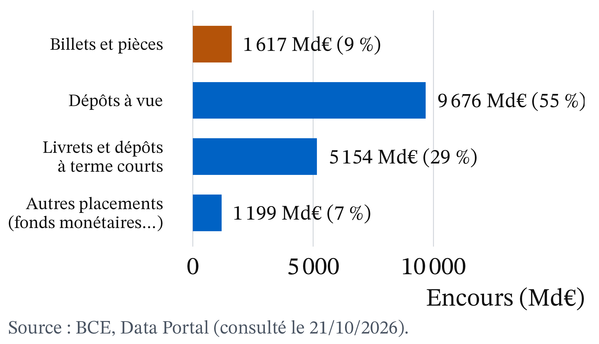
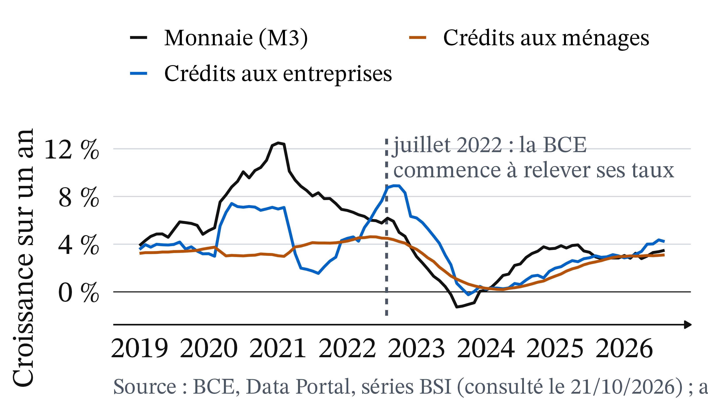
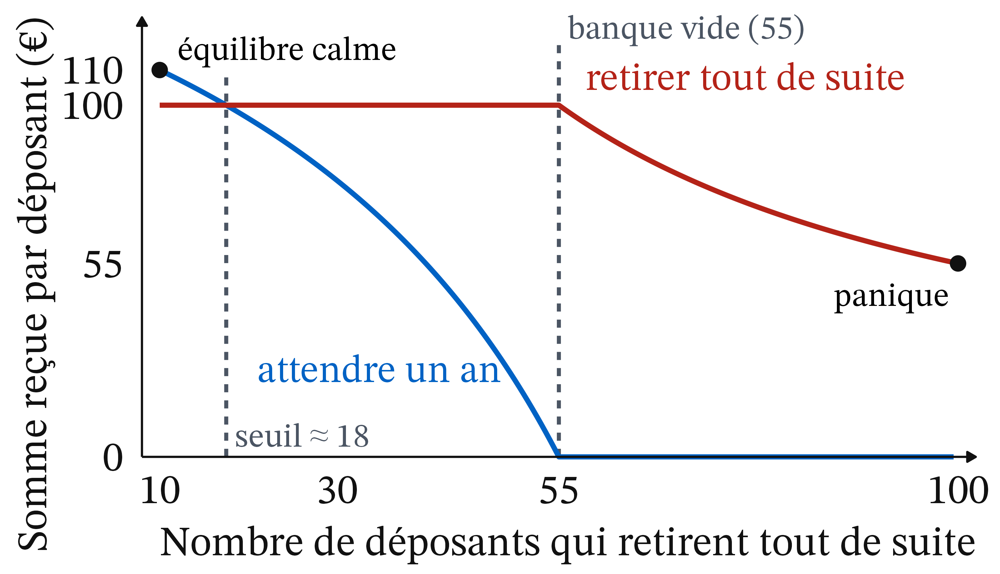
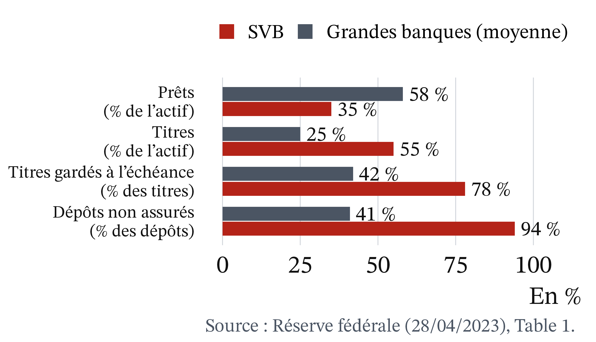

D’où vient l’argent ?
CM 6 · Partie II · La monnaie, l’État, le monde
ATER en économie, Université Clermont Auvergne
Une banque qui fonctionnait a disparu en quarante-huit heures
- Jeudi 9 mars 2023 : les clients de Silicon Valley Bank retirent plus de 40 milliards de dollars en une journée.
- Vendredi 10 mars : le régulateur ferme la banque.
Source : Réserve fédérale, rapport sur SVB, 28/04/2023.
Neuf euros sur cent seulement sont des billets
- Zone euro, août 2026 : M3 = 17 646 Md€.
- Billets et pièces : 1 617 Md€, soit environ 9 %.
- Le reste : pour l’essentiel des dépôts sur des comptes bancaires.
Source : BCE, Data Portal (consulté le 21/10/2026).
Qui crée la monnaie, et pourquoi la confiance fait-elle tenir une banque ?
- Si l’essentiel de la monnaie n’est pas fait de billets, qui la crée, et comment ?
- Pourquoi une banque qui fonctionne peut-elle disparaître en quarante-huit heures ?
Deux outils : le bilan bancaire et le jeu de la panique.
Rappel : quatre notions suffisent pour la séance
- Monnaie : ce que tout le monde accepte en paiement.
- Bilan : actif = passif (dettes et fonds propres).
- Taux d’intérêt : le prix d’un emprunt, en % par an.
- Positif : ce qui est ; normatif : ce qui devrait être.
Ce sont les crédits qui font les dépôts
McLeay, Radia et Thomas (2014), Banque d’Angleterre. Quand une banque accorde un prêt, elle crédite le compte de l’emprunteur : elle crée un dépôt nouveau, au lieu de prêter l’épargne d’autres clients.
Au Royaume-Uni, en 2014, les dépôts bancaires représentaient 97 % de la monnaie des ménages et des entreprises (Banque d’Angleterre, 2014).
La monnaie existe sous trois formes
- Fiduciaire : billets et pièces.
- Scripturale : dépôts à vue, une dette de la banque envers son client.
- De banque centrale : billets et réserves des banques.
L’essentiel de la monnaie est une inscription sur un compte

M1 = billets, pièces, dépôts à vue ; M3 y ajoute des placements à court terme. Source : BCE (21/10/2026).
Une banque crée de la monnaie en prêtant et la détruit au remboursement
- Crédit accordé : un dépôt apparaît, la banque détient une créance.
- Crédit remboursé : dépôt et créance disparaissent ensemble.
- Un fonds ou un particulier ne crée rien : l’argent existait déjà.
Avant le prêt, le bilan de la banque A est équilibré
Léa demande 1 000 € pour un scooter. Montants en euros.
| Actif | Passif | ||
|---|---|---|---|
| Réserves | 2 000 | Dépôts | 9 000 |
| Crédits | 8 000 | Fonds propres | 1 000 |
| Total | 10 000 | Total | 10 000 |
Le prêt allonge le bilan de 1 000 des deux côtés
| Actif | Passif | ||
|---|---|---|---|
| Réserves | 2 000 | Dépôts | 10 000 |
| Crédits | 9 000 | Fonds propres | 1 000 |
| Total | 11 000 | Total | 11 000 |
1 000 € de monnaie nouvelle existent. Aucun autre compte n’a baissé.
La banque a besoin de réserves quand l’argent part ailleurs
- Léa paie le vendeur, client de la banque B : la banque A transfère 1 000 de réserves.
- Chez A : dépôts 9 000, réserves 1 000, total 10 000.
- Léa rembourse plus tard : la monnaie créée est détruite.
Deux erreurs symétriques : « elle prête vos dépôts » et « elle crée sans limite »
Chez une banque, le dépôt naît du prêt. Mais elle doit se procurer des réserves pour régler les autres banques, au taux que fixe la banque centrale.
Trois limites empêchent une banque de prêter sans fin
- La banque elle-même : rentabilité, risque, réglementation.
- Les ménages et les entreprises : ils détruisent la monnaie en remboursant.
- La politique monétaire : les taux rendent le crédit plus ou moins cher.
Quand les taux montent, crédit et monnaie ralentissent

Source : BCE, Data Portal (consulté le 21/10/2026) ; août 2026 provisoire.
La monnaie suit le crédit, sans que ce soit une preuve
- 2020 : le crédit aux entreprises s’accélère, M3 aussi (+12,5 % en janvier 2021).
- Été 2022 : la BCE relève ses taux, M3 recule (−1,3 % en août 2023).
- Août 2026 : M3 +3,5 %, ménages +3,1 %, entreprises +4,2 %.
Pause
Reprise dans quinze minutes.
Une banque saine peut tomber si chacun craint que les autres retirent
 2022 · Maison Blanche, domaine public, Wikimedia Commons
2022 · Maison Blanche, domaine public, Wikimedia Commons
 2025 · Xuthoria, CC BY-SA 4.0, Wikimedia Commons
2025 · Xuthoria, CC BY-SA 4.0, Wikimedia Commons
Diamond et Dybvig (1983), Journal of Political Economy. Si chacun craint que les autres retirent, tous se précipitent. Une garantie des dépôts supprime la raison de se précipiter.
Financer des prêts longs avec des dépôts courts rend la banque fragile
- Transformation : prêts longs, ressources courtes.
- Solvable : ce qu’elle possède vaut plus que ce qu’elle doit.
- Liquide : elle peut payer tout de suite.
- Solvable ne veut pas dire liquide.
Une panique est auto-réalisatrice, une garantie la désamorce
- Panique bancaire : ruée de déposants qui craignent que la banque ne puisse pas payer tout le monde.
- Garantie des dépôts : promesse de rembourser jusqu’à un plafond. En France : 100 000 € par client et par banque.
Source : FGDR (consulté le 21/10/2026).
Le jeu de la panique : 100 déposants, 1 000 € de réserves, 9 000 € de prêts
- Chacun a déposé 100 €. Prêts remboursés dans un an avec 10 % d’intérêts.
- Contrat : « 100 € tout de suite, ou 110 € dans un an. »
- 10 déposants pressés par an. Vente en urgence : la moitié de la valeur des prêts.
En temps calme, chaque déposant patient reçoit 110 €
- 10 retraits × 100 = 1 000 € : les réserves suffisent.
- Prêts : 9 000 × 1,10 = 9 900 €, partagés entre 90 déposants.
- 9 900 ÷ 90 = 110 €. La banque est solvable.
Avec une rumeur, attendre rapporte moins que retirer
- 30 retraits : il faut 3 000 €, il manque 2 000 €. La banque vend 4 000 € de prêts à moitié prix.
- Restent 5 000 € de prêts : 5 500 € ÷ 70 ≈ 79 € pour qui attend.
- Retirer rapporte 100 € : chacun retire.
Il existe deux équilibres : le calme et la panique

Exemple fictif.
Une garantie crédible empêche la panique qu’elle doit réparer
- Un fonds garantit 110 € à ceux qui attendent.
- Seuls les 10 déposants pressés retirent.
- La garantie n’a même pas à servir.
SVB ne ressemblait pas aux autres grandes banques

Fin 2022, en %. Source : Réserve fédérale, rapport sur SVB, 28/04/2023, Table 1.
SVB réunit les ingrédients du jeu de la panique
- Des dépôts prompts à partir : 94 % non garantis.
- Un actif peu liquide : obligations longues, moins-values latentes.
- Une rumeur qui va vite : 40 Md$ retirés le 9 mars.
SVB n’était pas parfaitement saine : la panique a transformé une fragilité en faillite.
Le mobile money est un moyen de paiement, pas une création monétaire
L’opérateur inscrit sur le compte la somme qu’il a reçue : la monnaie change de forme, pas de quantité. Il n’y a création que si une banque prête ou achète un titre.
2,3 milliards de comptes dans le monde en 2025 (GSMA, 2026).
Les petits déposants sont couverts, les gros beaucoup moins
- Revenu : sous 100 000 € par banque, couverture totale (FGDR).
- Mars 2023 : l’extension de la garantie a surtout protégé de gros déposants.
- Kenya, 2021 : crédit digital à 49 % à 442 % par an (Ducourant et al., The Conversation, 01/09/2026).
Le mobile money ouvre le paiement, mais pas à tous également
- Territoire : l’essentiel des nouveaux comptes vient d’Afrique subsaharienne (GSMA, 2026).
- Génération : à Abidjan, l’historique mobile money tient lieu de dossier (Ducourant et al., 2026).
- Genre : dans les pays à revenu faible ou intermédiaire, les femmes ont 36 % de chances en moins de posséder un compte de mobile money (2024, contre 30 % en 2021 ; GSMA, 2026, d’après la Banque mondiale).
Les banques créent la monnaie, mais pas à partir de rien
Positif : les banques créent l’essentiel de la monnaie en prêtant, avec une dette de l’emprunteur en contrepartie ; la création est limitée.
Normatif : est-il juste que des banques touchent des intérêts sur une monnaie qu’elles créent ? L’analyse ne tranche pas.
Deux écoles : la monnaie est pilotée d’en haut, ou créée à la demande de crédit
- Multiplicateur de crédit : la banque centrale fixe la quantité de monnaie de banque centrale ; monnaie exogène, proche de la tradition monétariste.
- Post-keynésiens : monnaie endogène, créée à la demande de crédit.
La Banque d’Angleterre se range de ce côté.
Garantir tous les dépôts rassure, mais peut inciter au risque
- Aléa moral : celui qui est assuré se comporte de façon plus risquée.
- Perrin, Burietz et Bertrand : une garantie illimitée rassure à court terme, mais risque de fragiliser le système à long terme.
- 12 mars 2023 : les autorités garantissent tous les dépôts de SVB, après coup (The Conversation, 13/03/2023).
En France, la garantie des dépôts est née d’une défaillance locale
Fonds créé par la loi n° 99-532 du 25 juin 1999, après la défaillance du Crédit martiniquais. Aujourd’hui FGDR : 100 000 € par client et par établissement, remboursés sous 7 jours ouvrables.
À retenir
- Billets et pièces : 9 % de M3.
- Les crédits font les dépôts.
- La création a des limites.
- Solvable, mais parfois illiquide.
- Une panique s’auto-réalise.
- Garantir les dépôts : jugement normatif.
Plan de dissertation : ce que l’outil montre, puis ce qu’il ne tranche pas
- Ce que disent le bilan et le jeu de la panique : le crédit crée la monnaie ; la confiance fait vivre la banque.
- Ce qu’ils ne tranchent pas : qui doit créer la monnaie ? Jusqu’où garantir les dépôts ?
CM 6 · Monnaie